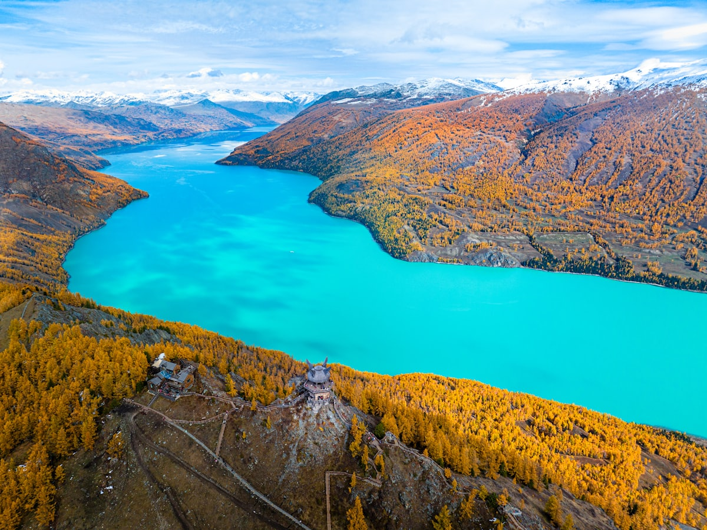
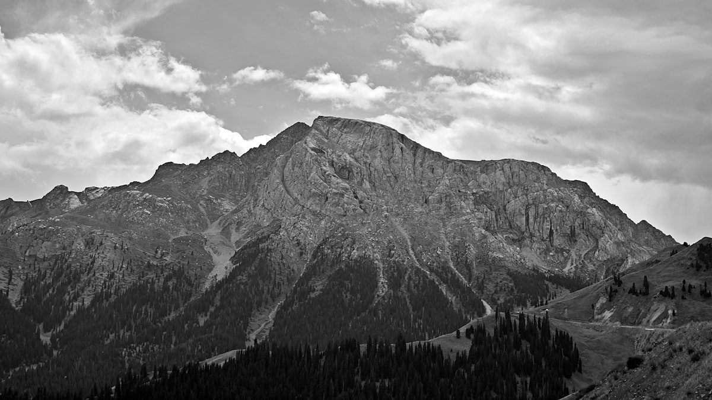
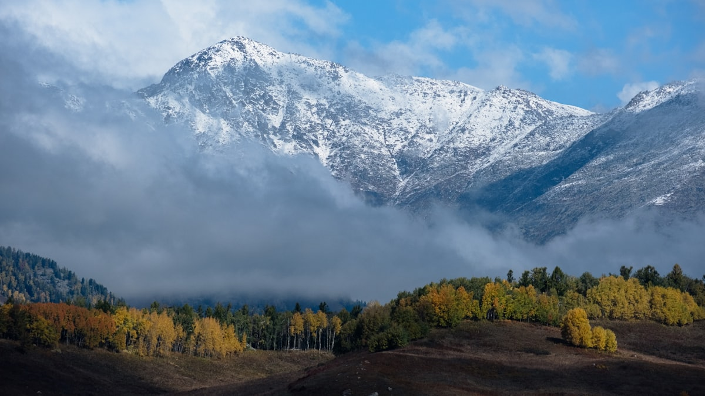
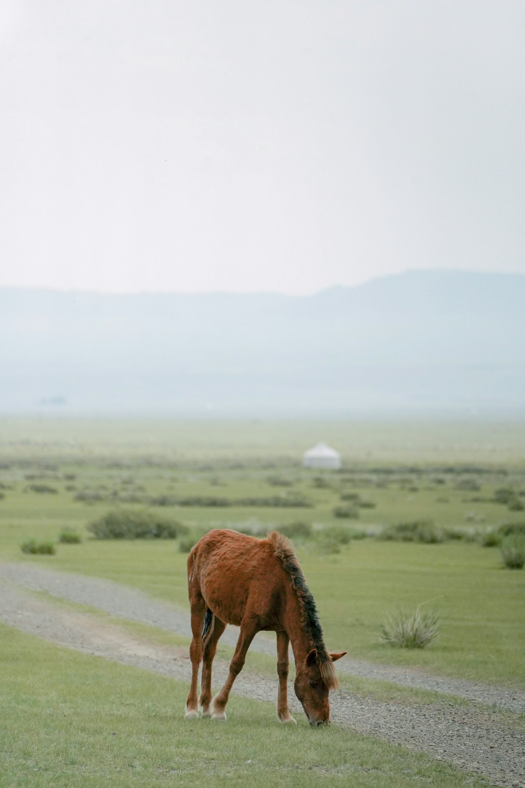
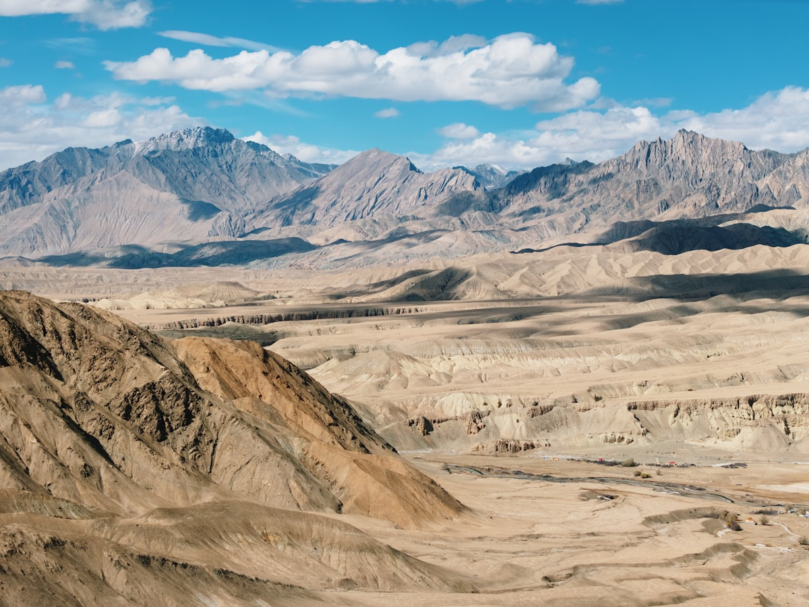
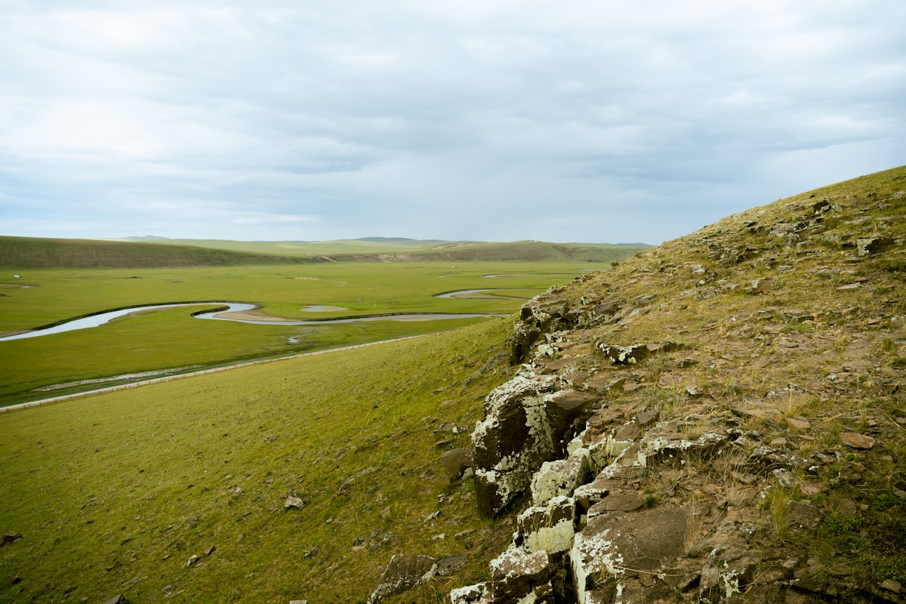
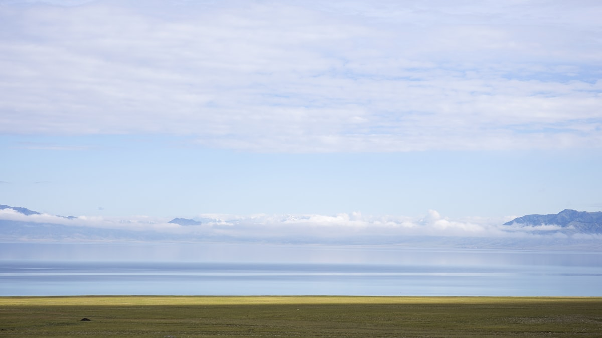
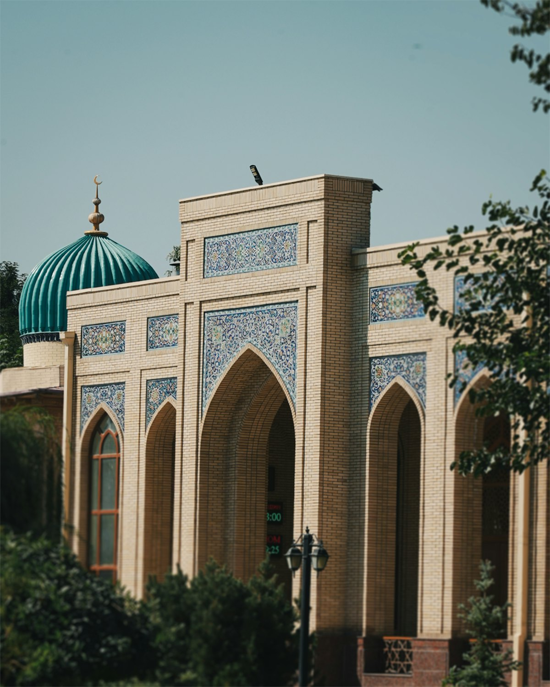

| 事项 | 结论 |
|---|---|
| 事项 | 结论 |
| 推荐方案 | 10 天 9 晚：乌鲁木齐（3 晚）+ 吐鲁番（1 晚）+ 喀纳斯/禾木（3 晚）+ 那拉提/巴音布鲁克（2 晚） |
| 返程约束 | 第 10 天从乌鲁木齐返程 |
| 行程链 | 乌鲁木齐 → 天池 → 吐鲁番 → 喀纳斯 → 独库公路 → 返程 |
| 预算（人均） | 经济 6000–8000 ／ 标准 10000–14000 ／ 舒适 18000–25000 |
| 三件提前事 | ① 喀纳斯旺季住宿提前 1 个月订 ② 独库公路开放期查清楚 ③ 吐鲁番夏季避正午 |
| 季节提醒 | 6–9 月草原最美；独库公路 6 月中–9 月底开放；9 月喀纳斯秋色封神 |
| 交通卡 | 喀纳斯段建议直飞阿勒泰/喀纳斯机场，省 10h 车程 |
以下为 10 天 9 晚的北疆环线节奏：先东线（天池+吐鲁番），再飞喀纳斯深度游 3 天，最后独库公路南下收尾。
| 日期 | 行程 | 过夜地 | 主题 |
|---|---|---|---|
| D1 抵乌鲁木齐 | 入住市中心，国际大巴扎 + 红山公园 | 乌鲁木齐 | 抵达 + 预热 |
| D2 | 天山天池一日（往返约 3h 车程） | 乌鲁木齐 | 天山明珠 |
| D3 | 动车/包车赴吐鲁番：火焰山 + 坎儿井 + 葡萄沟 | 吐鲁番 | 火洲风情 |
| D4 | 吐鲁番：交河故城 → 鄯善库木塔格沙漠日落 | 鄯善/吐鲁番 | 丝路故城 |
| D5 | 返乌鲁木齐 → 飞阿勒泰/喀纳斯，宿贾登峪 | 喀纳斯 | 转场进山 |
| D6 | 喀纳斯湖：观鱼台 + 三湾徒步 | 喀纳斯 | 人间仙境 |
| D7 | 喀纳斯 → 禾木村：白桦林 + 禾木河 | 禾木 | 图瓦村落 |
| D8 | 禾木 → 阿勒泰 → 飞回乌鲁木齐 | 乌鲁木齐 | 回城休整 |
| D9 | 乌鲁木齐 → 独库公路北段 → 那拉提草原 | 那拉提 | 独库传奇 |
| D10 返程 | 那拉提 → 巴音布鲁克（天鹅湖+九曲十八弯），经独库南段返程 | — | 收尾 |
以下为 10 天全程的逐小时执行时间线，可当作「当天打开照着走」的清单。标注 ※ 的可选项视体力与天气取舍。
| 时间 | 事项 |
|---|---|
| 14:00–17:00 | 抵达乌鲁木齐（飞机到地窝堡机场，高铁到乌鲁木齐站），入住市中心 |
| 17:30–18:30 | 办理入住（推荐天山区/沙依巴克区） |
| 19:00–21:00 | 国际大巴扎（免费）：民族风情建筑 + 干果市场 |
| 21:00 | ※ 红山公园（免费）：登塔俯瞰城市夜景 |
| 时间 | 事项 |
|---|---|
| 08:30 | 包车/旅游直通车赴天山天池（乌鲁木齐东约 100km，1.5h） |
| 10:00–10:30 | 换乘景区区间车进山 |
| 10:30–15:00 | 天山天池（参考价 155 元+区间车 60 元）：雪山倒映天池、西王母庙 |
| 15:00–17:00 | 沿栈道徒步到东小天池/飞龙潭（体力可选） |
| 18:00 | 返回乌鲁木齐晚餐 |
| 时间 | 事项 |
|---|---|
| 08:30–10:00 | 动车乌鲁木齐→吐鲁番北（约 1h），包车游览 |
| 10:30–12:30 | 火焰山（参考价 40 元）：『西游记』火焰山，地表 70℃ 体验 |
| 13:00–14:00 | 午餐：葡萄沟农家乐 |
| 14:30–17:00 | 坎儿井乐园（参考价 40 元）+ 葡萄沟（参考价 60 元）：吐鲁番三宝 |
| 18:30 | 宿吐鲁番，晚餐夜市 |
| 时间 | 事项 |
|---|---|
| 08:30–11:30 | 交河故城（参考价 70 元+区间车）：世界最大生土建筑遗址 |
| 12:00–13:00 | 午餐：吐鲁番市区 |
| 13:30–15:00 | 包车赴鄯善（约 100km，1.5h） |
| 15:30–19:30 | 库木塔格沙漠（参考价 30 元+区间车 30 元）：城市边上的沙山，骑骆驼、看日落 |
| 20:00 | 宿鄯善或返回吐鲁番 |
| 时间 | 事项 |
|---|---|
| 08:30–10:00 | 动车吐鲁番/鄯善返回乌鲁木齐 |
| 12:00–13:30 | 飞乌鲁木齐→阿勒泰或喀纳斯（旺季有航班，约 1.5h） |
| 15:00–17:00 | 机场乘区间车赴喀纳斯景区（喀纳斯机场→贾登峪约 2h） |
| 17:30 | 入住贾登峪/喀纳斯，晚餐 |
| 20:00 | ※ 喀纳斯河畔散步，看落日 |
| 时间 | 事项 |
|---|---|
| 08:30 | 购票进景区（门票+区间车约 230 元，2 日有效） |
| 09:30–12:00 | 观鱼台（区间车另 20 元）：登 1068 级台阶俯瞰喀纳斯湖全景 |
| 12:00–13:00 | 午餐：景区内 |
| 13:30–17:00 | 三湾徒步：神仙湾、月亮湾、卧龙湾，栈道 2–3h |
| 18:00 | 返程，宿喀纳斯/贾登峪 |
| 20:30 | ※ 景区内看星星（光污染极低） |
| 时间 | 事项 |
|---|---|
| 09:00 | 喀纳斯→禾木（约 70km，区间车 2h） |
| 11:00–12:00 | 入住禾木村小木屋 |
| 12:00–13:00 | 午餐：禾木村 |
| 13:30–17:00 | 禾木村（门票+区间车约 100 元）：白桦林、禾木河、木桥 |
| 18:00 | ※ 登禾木观景台看村庄全景日落 |
| 21:00 | 小木屋围炉夜话 |
| 时间 | 事项 |
|---|---|
| 08:00 | 禾木出发返回阿勒泰机场（约 4h 车程） |
| 12:00–13:30 | 飞阿勒泰→乌鲁木齐（约 1.5h） |
| 15:00–17:00 | 乌鲁木齐市区休整：逛博物馆或商场 |
| 19:00 | 晚餐：大盘鸡、烤肉 |
| 21:00 | 早休息，为独库公路养精蓄锐 |
| 时间 | 事项 |
|---|---|
| 07:30 | 乌鲁木齐出发（→独山子 250km，约 3.5h） |
| 11:00 | 进入独库公路北段（独山子→乔尔玛约 140km） |
| 13:00–14:00 | 乔尔玛烈士陵园 + 午餐 |
| 15:00–18:00 | 翻越哈希勒根达坂（海拔 3400 米），沿途雪山+森林 |
| 19:00 | 抵达那拉提，宿那拉提镇 |
| 时间 | 事项 |
|---|---|
| 08:00–11:00 | 那拉提草原（参考价 95 元+区间车）：空中草原、骑马 |
| 11:30 | 出发沿独库中段赴巴音布鲁克（约 120km，3h） |
| 14:30–18:30 | 巴音布鲁克（参考价 65 元+区间车）：天鹅湖 + 九曲十八弯日落 |
| 20:00 | 晚餐后经独库南段赴库车（约 260km，4h），从库车机场返程；或次日由伊宁/库尔勒飞离 |
必去（必去）/ 顺路（顺路）/ 可跳过（可跳过）。

必去
必去
必去
顺路
顺路
顺路
可跳过图片为 Unsplash 主题图（喀纳斯、天池、独库公路等多为新疆实景），用于页面配图。更多免费景点：红山公园、国际大巴扎、新疆博物馆。
点击左侧节点可在地图上定位；点击地图 marker 会高亮对应节点。坐标为 WGS-84 转 GCJ-02 纠偏后标注。
以下为单人、不含购物的估算；门票为旺季参考价，以现场为准。往返交通按飞机计（从东部出发约 2000–3000 元），新疆省内航班（乌鲁木齐↔喀纳斯）和包车是两大开支。
| 项目 | 经济（6000–8000） | 标准（10000–14000） | 舒适（18000–25000） |
|---|---|---|---|
| 往返交通 | 飞机约 1800–2500 | 飞机+接送约 3000–4000 | 直飞头等/高铁+机 5000–6500 |
| 省内交通 | 动车+大巴 800–1200 | 飞喀纳斯+拼车 2500–3500 | 全程包车 6000–8000 |
| 住宿（9 晚） | 青旅/快捷 1000–1500 | 连锁+小木屋 2500–4000 | 禾木木屋+星级 7000–9000 |
| 门票 | 基础景点约 600 | 含喀纳斯套票约 1000 | 全含+骑马/游船约 1600 |
| 餐饮（10 天） | 1000–1300 | 1800–2400（含烤全羊） | 3000–4000 |
对人文更感兴趣：乌鲁木齐→喀什古城→塔县帕米尔高原→盘龙古道，季节上 4–6 月与 9–10 月最佳。喀什机场有直飞东部城市航班，可作为独立一趟行程。
独库封闭期（10 月–次年 5 月）走伊犁：乌鲁木齐→赛里木湖→果子沟→伊宁→那拉提，草原更绿、适合 5–7 月，全程包车无管制，节奏更从容。
| 方式 | 时长 | 参考价 | 备注 |
|---|---|---|---|
| 飞机（推荐） | 视出发地 4–6h | 1500–3000 元 | 乌鲁木齐地窝堡机场直达全国主要城市 |
| 高铁/火车 | 视出发地 8–30h | 400–1200 元 | 兰新高铁通兰州/西安，长途可选夜车 |
| 自驾进疆 | 视出发地 2–5 天 | 油费+过路费 | 河西走廊入疆，独库等需查管制 |
| 区域 | 价格/晚 | 优点 | 短板 |
|---|---|---|---|
| 乌鲁木齐市中心 | 快捷 300–500 / 星级 600–1200 | 机场/车站交通方便 | 旺季紧张 |
| 喀纳斯/贾登峪 | 木屋 500–1200 | 近景区，风景好 | 设施有限、需提前 1 个月订 |
| 禾木村 | 小木屋 600–1500 | 推窗见景、看晨雾 | 最贵、条件简朴 |
| 那拉提/巴音布鲁克 | 快捷 300–600 | 独库线上补给点 | 旺季一房难求 |